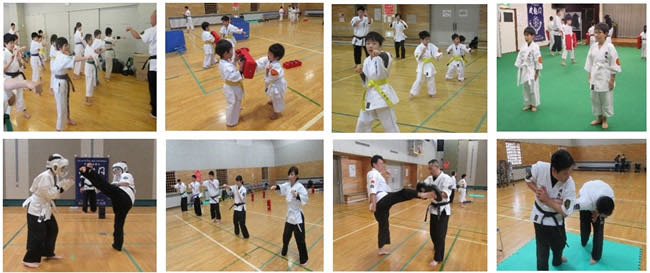
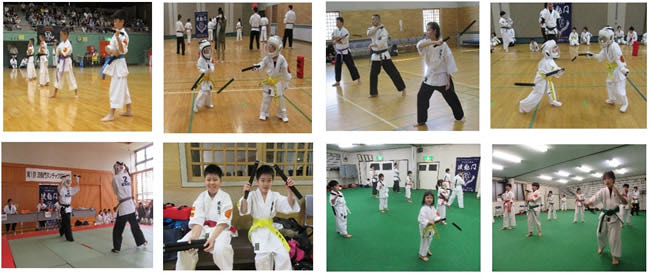
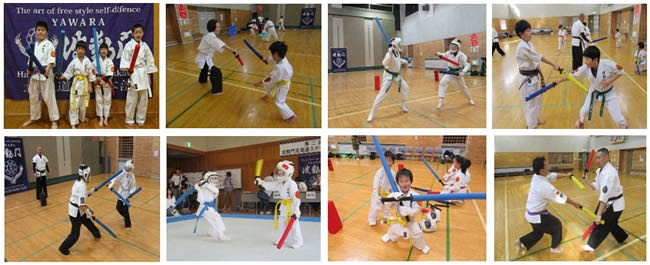

01
波動門体術
拳技体術の部（突き・蹴り＝パンチ・キック）、柔法体術の部（捕り技・投げ技・締め技・関節技）。日本伝承の柔術の技法を使用します。
級・段位認定あり ／ 指導員養成コースあり札幌を中心に、青少年の健全育成と社会人の生涯学習を目的にスポーツクラブ活動を行っています。 日本伝承の柔術の技法にヌンチャクスポーツ、ちゃんばらスポーツを取り入れ、幼児から大人まで ゲーム感覚で楽しみながら安全に稽古できます。
"波動門体術"は、日本伝承の柔術、拳法などの技法に、ボクシングの技術を加味して体系化された護身格闘法です。
波動門北海道は1987年から札幌を中心に青少年の健全育成及び社会人の生涯学習を目的にスポーツクラブ活動を行っています。 社会にでてから必要となる礼儀作法、協調性を重視して指導しています。
練習の中で日本伝承の柔術の技法の他にヌンチャク、ちゃんばらスポーツなども取り入れ基礎体力、動体視力、俊敏性を養う練習をしています。 波動門の大会含め、加盟している北海道防具空手道連盟、国際ヌンチャク競技連盟の大会も年4回以上ありますので、 幼児から大人までゲーム感覚で楽しみながら、安全に修得することができます。
幼児3歳児からレディース、マスターズ、初心者の方も体力・年齢に合わせて安全に指導いたします。
※見学、体験練習はいつでも出来ますので、ご連絡の上お気軽にお越し下さい。
級・段位認定制度があり、初心者から上級者まで、それぞれのペースで安全に上達できます。

拳技体術の部（突き・蹴り＝パンチ・キック）、柔法体術の部（捕り技・投げ技・締め技・関節技）。日本伝承の柔術の技法を使用します。
級・段位認定あり ／ 指導員養成コースあり
防具とオリジナルのソフトヌンチャクを使用して安全に試合を行います。国際ヌンチャク競技連盟の級・段位認定制度に対応。
国際ヌンチャク競技連盟認定
短棒、二刀流、長棒を使用する競技です。防具とソフト短棒・長棒を使用して安全に試合を行います。
防具・ソフト武器具使用札幌市内8会場をはじめ、北広島・江別、さらに東北・宮城でも稽古を行っています。稽古日・時間は会場ごとに異なります。
※各会場の稽古日・時間・最新の開催状況は事務局までお問い合わせください。お問い合わせページはこちら →
第36回 全日本清心会空手演武大会
第8回 波動門北海道スポーツ競技大会
北広島（大曲）の練習会場を夢プラザ（ふれあい学習センター）に変更しました。
第7回 波動門北海道スポーツ競技大会 北広島総合体育館
札幌山鼻スポーツクラブを新設
第6回 波動門北海道スポーツ競技大会 北広島総合体育館
第32回 全日本清心会空手演武大会 岩見沢スポーツセンター
第5回 波動門北海道スポーツ競技大会 北広島総合体育館
テレビ東京の「モヤモヤさまぁ〜ず2」で北広島支部の練習風景が放映されました。
札幌札苗農本スポーツクラブに武術健康体操コースを新設
第30回 全日本清心会空手演武大会
第21回 チャレンジカラテトーナメント
第3回 波動門スポーツ競技大会
uhb（8ch）北海道文化放送の「発見！タカトシランド」で北広島支部の練習風景が放映されました。
道衣や帯まわりの整え方についての資料です。既存サイトのページにリンクしています。
※練習着、共済保険、用具代などは別途かかります。詳しくは事務局までお問い合わせください。